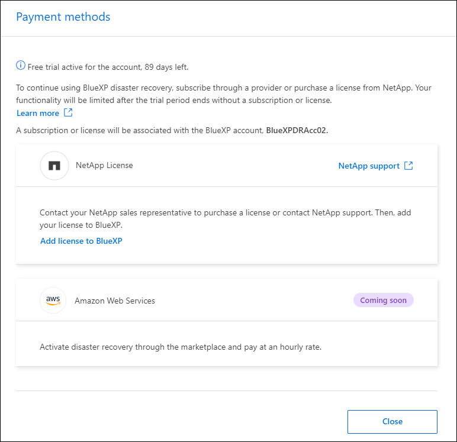
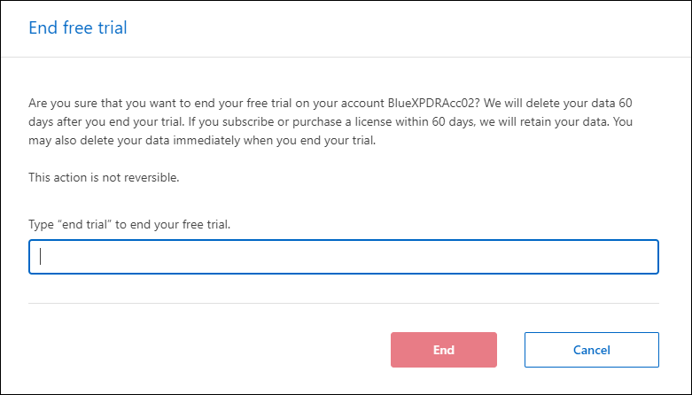

版本資訊
版本資訊
設定 BlueXP 災難恢復的授權
 建議變更
建議變更
有了 BlueXP 災難恢復功能、您可以免費試用使用該服務、或自行攜帶授權。
您可以使用下列授權類型：
-
註冊 90 天免費試用。
-
請自帶授權（ BYOL ）、這是您從 NetApp 銷售代表處取得的 NetApp 授權檔案（ NLF ）您可以使用授權序號、在 BlueXP 數位錢包中啟動 BYOL 。

|
BlueXP 災難恢復費用是根據來源站台上已配置的資料存放區容量而定、因為至少有一個 VM 具有複寫計畫。容錯移轉資料存放區的容錯容量不包含在容量限制中。對於 BYOL 而言、如果資料超過允許容量、則服務中的作業將受到限制、直到您取得額外容量授權或升級 BlueXP 數位錢包中的授權為止。 |
設定 BYOL 之後、您可以在 BlueXP 數位錢包 * 資料服務授權 * 標籤中看到授權。
在免費試用結束或授權過期之後、您仍可在服務中執行下列動作：
-
檢視任何資源、例如工作負載或複寫計畫。
-
刪除任何資源、例如工作負載或複寫計畫。
-
執行試用期間或授權期間所建立的所有排程作業。
試用 90 天免費試用
您可以使用 90 天免費試用版試用 BlueXP 災難恢復。
|
|
試用期間不會強制執行容量限制。 |
您可以隨時取得授權、直到 90 天試用結束為止、您將不會被收取費用。若要在 90 天試用之後繼續、您必須購買 BYOL 授權。
試用期間、您擁有完整功能。
-
存取 "BlueXP主控台"。
-
登入 BlueXP 。
-
從 BlueXP 左側導航欄中，選擇 * Protection * > * Disaster recovery * 。
如果這是您第一次登入此服務、就會出現登陸頁面。

-
如果您尚未新增 Connector for 其他服務、請新增一個。
若要新增 Connector 、請參閱 "深入瞭解連接器"。
-
設定 Connector 之後、在 BlueXP 災難恢復登陸頁面中、新增 Connector 的按鈕會變更為按鈕、以開始免費試用。選擇 * 開始免費試用 * 。
-
檢閱免費試用資訊、然後選擇 * Let's Go* 。
試用結束後、請透過 NetApp 購買 BYOL 授權
試用結束後、您可以透過 NetApp 銷售代表購買授權
-
請聯絡您的 NetApp 銷售代表以購買授權。
-
取得授權後、請返回 BlueXP 災難恢復。選取右上角的 * 檢視付款方式 * 選項。或者、在免費試用即將到期的訊息中、選取 * 訂閱或購買授權 * 。

-
選取 * 新增授權至 BlueXP* 。您將會被引導至 BlueXP 數位錢包。

-
在 BlueXP 數位錢包中、從 * 資料服務授權 * 標籤中、選取 * 新增授權 * 。
-
在「新增授權」頁面中、輸入序號和 NetApp 支援網站 帳戶資訊。

-
選擇*新增授權*。
結束免費試用
您可以隨時停止免費試用、也可以等到免費試用到期。
-
在 BlueXP 災難恢復中，選擇右上角的 * 免費試用 - 查看詳細信息 * 。
-
在下拉式詳細資料中、選取 * 結束免費試用 * 。

-
如果您要刪除所有資料、請勾選 * 當我的試用結束時刪除所有資料 * 。
這會刪除所有排程、複寫計畫、資源群組、 vCenter 和站台。稽核資料、作業記錄和工作記錄會保留到產品生命週期結束為止。
如果您結束免費試用、而不要求刪除資料、而且您沒有購買授權或訂閱、則在免費試用結束 60 天後、 BlueXP 災難恢復會刪除您所有的資料。 -
在文字方塊中輸入「 End 試用」。
-
選取 * 結束 * 。
自帶授權（ BYOL ）
如果您攜帶自己的授權（ BYOL ）、設定包括購買授權、取得 NetApp 授權檔案（ NLF ）、以及將授權新增至 BlueXP 數位錢包。
購買 BlueXP 災難恢復授權
如果您沒有 BlueXP 災難恢復授權、請聯絡我們購買。
-
執行下列其中一項：
-
請聯絡 NetApp 銷售部門以購買授權。
-
按一下BlueXP右下角的聊天圖示、申請授權。
-
取得 BlueXP 災難恢復授權檔案
向 NetApp 銷售代表購買 BlueXP 災難恢復授權後、您可以輸入 BlueXP 災難恢復序號和 NetApp 支援網站 （ NSS ）帳戶資訊來啟動授權。
開始之前、您必須先取得下列資訊：
-
BlueXP 災難恢復序號
請從您的銷售訂單中找出此號碼、或聯絡客戶團隊以取得此資訊。
-
BlueXP 帳戶 ID
您可以從 BlueXP 頂端選取「 * 帳戶 * 」下拉式清單、然後選取帳戶旁邊的「 * 管理帳戶 * 」、以找到您的 BlueXP 帳戶 ID 。您的帳戶ID位於「總覽」索引標籤。若為無法存取網際網路的私人模式網站、請使用 account-DARKSITE1 。
將 BlueXP 災難恢復授權新增至 BlueXP 數位錢包
為 BlueXP 帳戶購買 BlueXP 災難恢復授權後、您必須將授權新增至 BlueXP 數位錢包。
-
從 BlueXP 功能表中、選取 * Governance * > * Digital wall* > * Data Services Licenses* 。
-
選擇*新增授權*。
-
在「新增授權」頁面中、輸入授權資訊、然後選取 * 新增授權 * ：
-
如果您有 BlueXP 授權序號、而且知道您的 NSS 帳戶、請選取 * 輸入序號 * 選項、然後輸入該資訊。
如果下拉式清單中沒有您的 NetApp 支援網站帳戶， "將新增至BlueXP的NSS帳戶"。
-
如果您有 BlueXP 授權檔案（安裝在黑暗網站時為必填）、請選取 * 上傳授權檔案 * 選項、然後依照提示附加檔案。
-
BlueXP 數位錢包現在以授權證明災難恢復。

BlueXP 授權到期時請更新
如果您的授權期限即將到期、或是您的授權容量已達到上限、您將會在 BlueXP 災難恢復 UI 中收到通知。您可以在 BlueXP 災難恢復授權過期前更新、以確保您存取掃描資料的能力不會中斷。

|
此訊息也會出現在 BlueXP 數位錢包和中 "通知"。 |
-
選取 BlueXP 右下角的聊天圖示、以申請延長您的期限、或申請額外的授權容量、以取得特定序號。您也可以傳送電子郵件要求更新授權。
在您支付授權費用並向 NetApp 支援網站 註冊之後、 BlueXP 會自動更新 BlueXP 數位錢包中的授權、而「資料服務授權」頁面則會在 5 到 10 分鐘內反映變更。
-
如果BlueXP無法自動更新授權（例如、安裝在暗點）、則您需要手動上傳授權檔案。
-
您可以從 NetApp 支援網站 取得授權檔案。
-
存取 BlueXP 數位錢包。
-
選取 * 資料服務授權 * 標籤、選取要更新之服務序號的 * 動作 … * 圖示、然後選取 * 更新授權 * 。
-